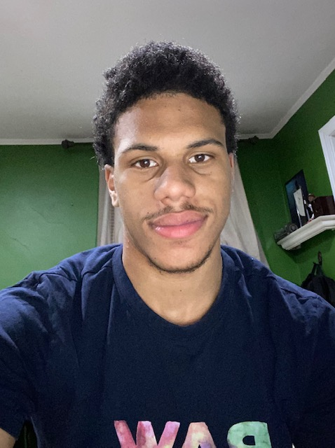
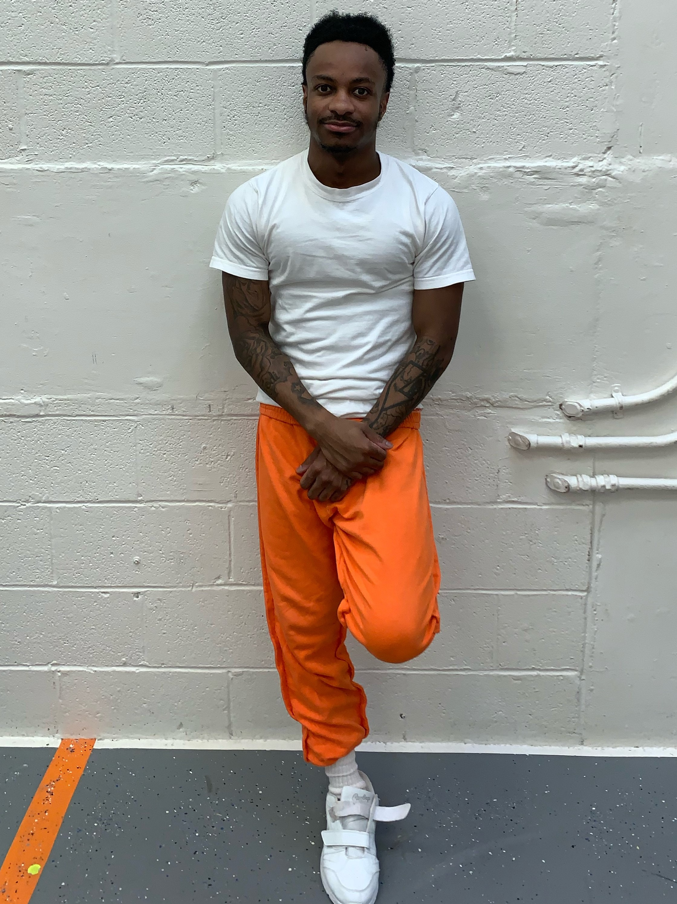

Our O.U.T LEADERS will be the heart and soul of the Stay-Out.They engage in a range of duties including coaching,effective communication, building trust with participants and guiding them through personal experience. They touch on all seven key elements of the mobile pop up. These coaches play a vital role in the development of our members because they work one-on-one with them and build personal relatonships with our particpants.Our overall goal is to have a vision of a safe enviroment that creates opportunity
In STAY-OUT mobile pop-up safe zone we want out particapants to have the tools to succeed in whatever they put their mind to. Me being a outleader, I have the oppurtunity to get an understanding with the participents on what resources they need or what areas they need help in. Our number one goal is to HELP US HELP YOU STAY-OUT!

Me being an OUT leader, I aspire in refining and mentoring the youth in a way that will create internal and external growth. Us OUT leaders deeply value nurturing our kids and keeping positive and strong relationships with our participants. Many kids don't have many role models or positive influences so we feel it's important that we fill that void. Background checks are a vital requirement of becoming an OUT leader. Effective screening of our mentors reassures us that we have the right type of adults assisting and aiding our kids. Also, we are ex-offender friendly because we believe that a lot of troubled youth put more trust in people they can relate to. We want to inspire our kids to commit to self-improvement and work towards their goals in life.

Inspiring the youth and motivating generations to come By joining Stay-Out you will gain the resources to succeed in the real word By participating in one of our 7 key elements, Me being one of the Out leaders I have the Opportunity to build a bond with the participants and help guide them in the right direction threw personal experience and resources